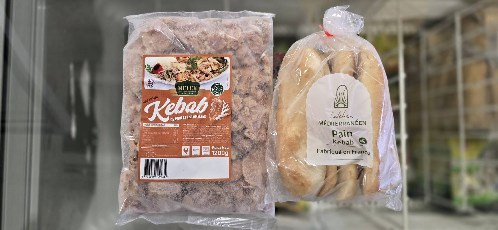
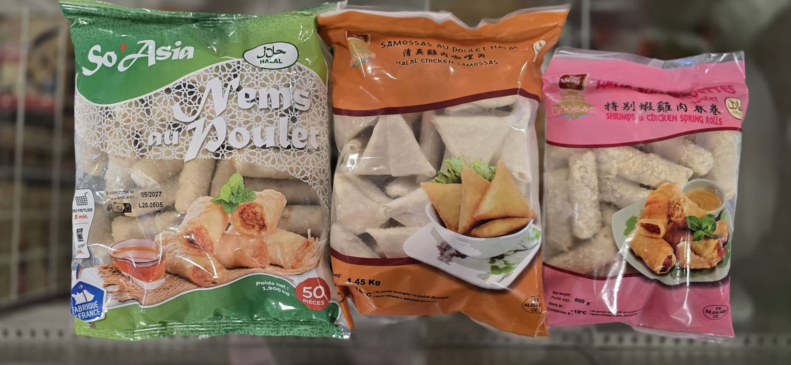

Rayon Halal
Les produits du rayon halal les plus achetés


Kit kébabs – Avec un sachet de viande de kébab halal et de pain à sandwichs, préparez vous de délicieux kékabs !
Poulet halal – Retrouvez dans votre magasin du poulet halal sous forme de chicken wings ou de tenders avec leur variantes pimentées !
Produits asiatiques halal – Dégustez des nems et samoussa halal, et bien plus encore !